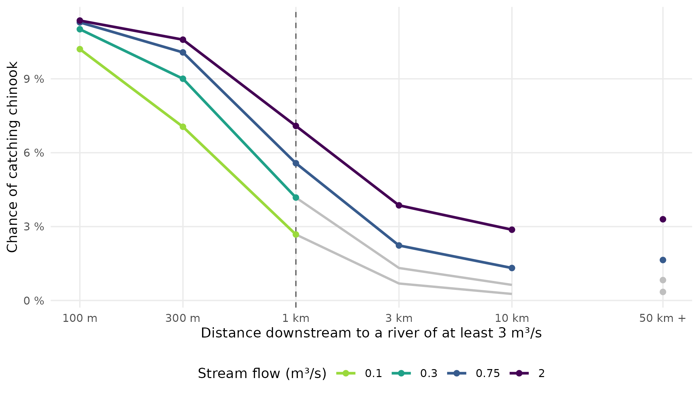
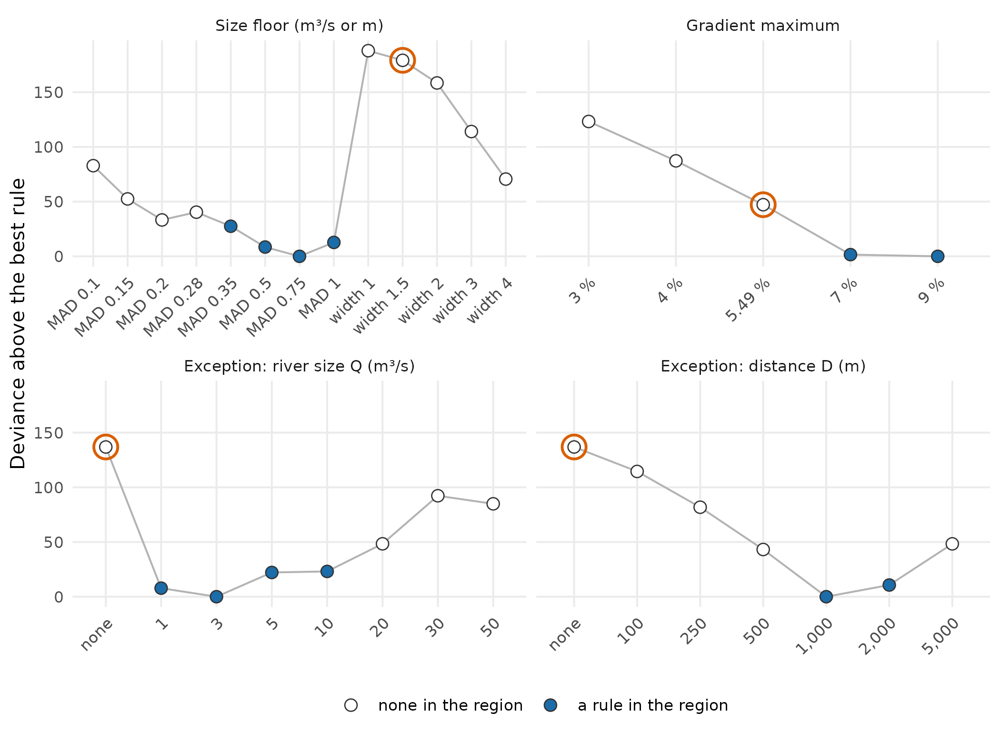

Chinook rearing: choosing link's thresholds from fish records
Source:vignettes/chinook_rearing.Rmd
chinook_rearing.RmdThe electrofishing records put young chinook salmon in more of
British Columbia’s small streams near large rivers, and in fewer far
from one, than link’s current rule allows. link
(Irvine 2026b)
maps where each fish species can spawn and rear on BC’s streams, and its
standard settings, default,
start from the thresholds New Graph runs bcfishpass with (Norris
2024b): for chinook rearing, a slope of at most 5.49 %, and a
channel at least 1.5 m wide. The records support a slope of at
most 13 %, and either an average flow of at least 0.75 m³/s or a river
of at least 3 m³/s within 1 km downstream. How the tuning works explains where
these rules come from and how they are tested.
In the Bulkley watershed group, around Smithers, the recommended rule draws 1,494 km of rearing habitat against 2,101 under link’s. What it drops (orange) is mostly the upper reaches of tributaries, where flow falls below its floor more than 1 km from a river. What it adds (green) is short reaches of small streams beside a river. The rest comes from the two rules’ slope and flow limits themselves, and from link’s step that keeps rearing only where it links to spawning, which keeps different stretches under each rule. Click a stream for what each rule reads there; the switch at the top right shows the grade, the use to expect on each segment.
What changes?
The recommended rule draws less habitat than link’s, and chinook are caught on it more often and off it less often.
| link now | Recommended | |
|---|---|---|
| Smallest stream | 1.5 m channel width | 0.75 m³/s average flow |
| Steepest slope | 5.49 % | 13 % |
| Near a river | none on stream lines | smaller streams within 1 km of a 3 m³/s river |
| Rearing habitat | 102,951 km | 88,458 km |
| Sites with chinook, on the habitat | 14 % | 18 % |
| Sites with chinook, elsewhere | 2.3 % | 1.3 % |
| Habitat is summed over the 136 watershed groups link classified for chinook when the comparison ran, each rule run through all of link’s steps. Both totals include lines through wetlands, which the two rules test differently (below). Sites are the 11,762 electrofishing sites of a usual fished area on reachable stream, river and wetland lines in those groups, a wider set than the one the rule was chosen on. They overlap the sites the rule was chosen on, so the rates show the rule does what it was chosen to do, not that it predicts new places. |
Why does a nearby river matter?
Young chinook move up from large rivers into small streams close by.
bcfishpass writes that idea with stream order: where streams are sized
by width, a first-order stream whose parent is order 5 or more counts as
rearing below the minimum width, if its width is mapped, along its whole
length (its
chinook model). link’s default leaves that exception
off. A model fitted after the choice shows the same idea in the records,
with a distance on it:

The fitted chance of catching chinook on one standard visit, by distance downstream to a river of at least 3 m³/s, for four stream flows, at a slope of 6.5 %. The dashed line is the recommended rule’s 1 km allowance: beyond it, streams below its 0.75 m³/s floor no longer count (grey). The fit is shown at six distances; the last stands for 50 km or more, or no such river, and is not joined.
Within 100 m of a river the chance is about the same whatever the stream’s flow, 11.4 % to 12.5 %. Ten kilometres away it rises with flow, from 0.3 % to 3.1 %. That is the shape the recommended rule draws: beside a river a small stream counts, away from one only a larger stream does.
How sure are we?
Scores carry error: another draw of watersheds would rank close rules differently. So the tuning treats every rule within one standard error of the best as a close call, a convention fixed before the run (how two rules are told apart). For chinook, 169 of 6,149 rules are close calls, all with a flow floor of 0.1 to 1 m³/s, the near-a-river allowance, and a slope limit of 7 % or more. The rule fixed in advance takes the close call nearest link’s; all differ from link’s stream-line rule in every dial, so it is the best scorer. link’s rule is 2.6 standard errors behind it.

How close the best rule using each value of each dial comes to the best rule overall, as score above the best (lower is better). Dark blue: at least one rule with that value is a close call at one standard error; light blue: only at 1.96 standard errors; white: neither. The orange ring marks the value of link’s rule on stream lines.
The flow floors near the best are close calls at one standard error and no width floor is; the slope limit is flat from 7 % up.
A stricter bar. At 1.96 standard errors, about the width of a 95 % interval, more rules are close calls, and the same choice holds:
| link now | Chosen at 1 SE | Chosen at 1.96 SE | |
|---|---|---|---|
| Smallest stream | 1.5 m channel width | 0.75 m³/s average flow | 0.75 m³/s average flow |
| Steepest slope | 5.49 % | 13 % | 13 % |
| Near a river | none on stream lines | smaller streams within 1 km of a 3 m³/s river | smaller streams within 1 km of a 3 m³/s river |
| Bold: differs from link’s rule. Close calls: 169 rules at one standard error, 2,297 at 1.96; link’s rule is a close call at neither. This package’s thresholds table (data/thresholds.csv, column rule_196) gives the choice at 1.96 for every species tuned. |
Three other checks.
| Check | Result | Points to |
|---|---|---|
| 4 other random splits into sets | the recommended rule is a close call on 4 of 4; link’s on 0 | the recommended rule |
| Chosen on four sets, scored on the fifth | the chosen rule beats link’s on 4 of 5 and beats it overall | choosing from the records |
| 200 redraws of the groups | a flow floor is chosen in every draw; the recommended slope limit in 40 % | a steady shape; an unsettled slope limit |
Before you use it
- It is about young chinook in streams. It was fitted to juvenile chinook caught by electrofishing in streams and says nothing about spawning. River polygons share the stream slope limit, so they get 13 % too, though no site in one was scored. Lines drawn through wetlands of 1 ha or more were tested by neither rule’s records. In the comparison, link’s rule counts them by their size or by a near-a-river pair, and the recommended rule puts them through the same test as a stream line, which leaves about 2,500 km of them as chinook rearing under the recommended rule, with a median grade of 0.38, against 8,200 km under link’s rule. Lakes keep their own condition.
- The cut-offs are a judgment call. Chinook get gradually less common as streams get smaller and steeper; there is no flow or slope where they stop. At one standard error, flow floors of 0.1 to 1 m³/s fit almost as well, and at 1.96 standard errors the choice is the same rule.
- Steeper slopes fit nearly as well. The close calls run from 7 % to 30 %, the top of the list, and 13 % is the best scorer among them, not a slope at which chinook stop.
-
It was not tested against bcfishpass’s own
exception. The candidates never included the stream-order rule
above, so the records show that the flow-and-distance allowance beats
link’s
default, not that it beats bcfishpass’s. - On the map, distance is measured from the bottom of each segment. To choose the rule, the distance to a river’s bank was measured from each site. On the map it is measured from each segment’s downstream end, so when that end is within 1 km of the river the whole segment counts.
How was this done?
| Step | For chinook rearing |
|---|---|
| Records | The Fisheries Data Information System’s electrofishing sites (Province of British Columbia 2022): where crews fished, and whether they caught chinook. 7,823 sites in 111 watershed groups: those on ordinary stream lines, of a usual fished area, with no code in the catch that could hide chinook and no barrier to chinook downstream, in groups where link expected chinook when the tuning ran; the tests use the 45 groups where chinook were caught at some sites and not others, 4,858 sites, 234 with chinook. (More) |
| Placement | Each site went onto the BC Freshwater Atlas, loaded by fwapg (Norris 2024c). A site whose 1:50k tributary code the Atlas’s crosswalk knows went to the nearest stream that code names, kept when it lay within 500 m of the point, and was dropped otherwise; a site with no such code went to the nearest stream, kept when it lay within 200 m. (More) |
| Flow | wet’s modelled average flow (Irvine 2026c): PCIC’s VIC-GL runoff (Schnorbus 2018) routed with Raven (Craig et al. 2020) and carried onto Atlas streams by a crosswalk in New Graph’s fork of fwapg (Norris and Irvine 2026), with wet’s own water balance where that flow does not reach or, on a stream’s own line, carries under a fifth of the balance’s. |
| Slope | The slope of the link segment a site sits on, the one link applies a rule to. link can cut a stream at a site that caught a species it models, so a site with chinook can start a short segment of its own. |
| Candidates | 6,149 rules, link’s among them, from three dials: the smallest stream (an average flow of 0.1, 0.15, 0.2, 0.28, 0.35, 0.5, 0.75 or 1 m³/s, or a channel width of 1, 1.5, 2, 3 or 4 m); the steepest slope (3 %, 4 %, 5.49 %, 7 %, 9 %, 11 %, 13 %, 15 %, 20 %, 25 % or 30 %); and a near-a-river allowance (none, or a river of 1, 3, 5, 10, 20, 30 or 50 m³/s within 100, 250, 500, 1,000, 2,000 or 5,000 m downstream). |
| Scoring | The groups were split into 5 sets, and each set was predicted by a model fitted to the others. The score adds up how far each prediction was from what the crew found; lower is better. (More) |
| Rules run by | fresh (Irvine 2026a), through all of link’s steps for the map and the habitat totals. |
| Left out | The province’s other fish observations, gathered in bcfishobs (Norris 2024a): they record where fish were found, not where they were sought and missed. Sites off ordinary stream lines, of an unusual fished area, with a code in the catch that could hide chinook, or with a barrier to chinook downstream. (More) |
Software and citation
Each tool is cited where it is first used. To cite this package,
citation("knowledge") gives:
Irvine A (2026). knowledge: Fisheries Evidence and Tuned Habitat Thresholds for BC Watershed Groups. New Graph Environment Ltd. doi:10.5281/zenodo.23990335 https://doi.org/10.5281/zenodo.23990335. Version 0.4.35, https://newgraphenvironment.github.io/knowledge/.